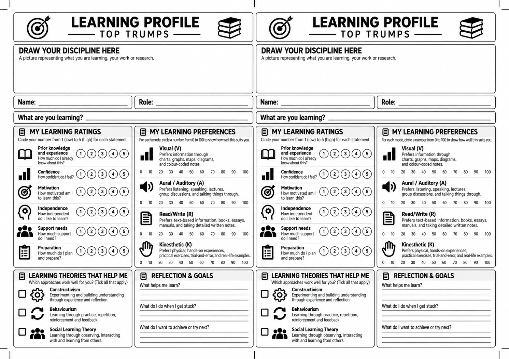

AI in Research and the Workplace
· 11:30 to 13:30
A pilot session exploring what people wanted from the Lab through a talk on causal AI, open discussion and games including Contexto. Read the recap and the suggestions for future sessions.
An informal lunchtime coding club. A friendly space to learn, experiment, troubleshoot and share what we’re working on.
The Logic Lab brings people together around coding, research tools and the questions that come with them. It welcomes University of Exeter staff and postgraduate researchers, from complete beginners to experienced coders.
Cat Russon founded the Logic Lab at St Luke’s Campus, initially organising the sessions independently. She has since joined the Research Coding Community, bringing the Lab into a wider collaboration. Cat continues to lead the Lab, with additional team members now supporting its planning and delivery.
The idea is simple: set aside a little time to explore something with other people. Bring a tool you have discovered, a project you are working on, a bug that has you stuck or an experiment that did not work. You are equally welcome to listen, ask questions and see what everyone else is doing.
We aim to meet roughly once a month, alternating between Streatham and St Luke’s campuses. Lunch is provided, and you can come along for as much or as little of a session as suits you.
Each Lab has its own focus. Depending on the session, we might:
There is no set experience level and no expectation to present. A laptop is useful if you want to code, but you do not need a finished project or a prepared pitch to take part.
Each session has its own page, with a recap, activities and any shared materials. Use the tabs above to move between them.
· 11:30 to 13:30
A pilot session exploring what people wanted from the Lab through a talk on causal AI, open discussion and games including Contexto. Read the recap and the suggestions for future sessions.
· 11:30 to 13:30
A session on learning, pedagogy and the experiences we bring to a new skill. Explore the presentation and download the Learning Profile Top Trumps printouts to reuse at your own events.
The Research Coding Community brings together people, clubs and resources to support coding for research across the University of Exeter. Through shared activities and events such as the Community Fair, it helps colleagues exchange knowledge, discover tools and support, and connect with others across disciplines.
A pilot session to explore what people wanted from the Logic Lab, using AI in research and the workplace as a starting point.
11:30 to 13:30 · EMS/G27, St Luke’s Campus
Lunch
provided
The August session was a pilot designed to understand what people wanted from future Logic Labs: the topics they would find useful, the activities they would enjoy and the support they needed. AI in research and the workplace provided a starting point for the conversation.
The informal, “buffet style” format allowed people to experience a mix of a talk, discussion and games, while sharing ideas about how the Lab could develop.
Participants were invited to bring a tool, a use case, a challenge, an unsuccessful experiment or a question. Optional pitches lasting five minutes were part of the invitation, with no expectation that everyone would present.
The session invitation received 31 acceptances and 17 tentative responses.
The opening talk considered causal AI and the historical connections between statistics, causal thinking and eugenics. It explored how measurement and analysis can become harmful when assumptions, bias and value judgements go unexamined.
Francis Galton’s composite portraits of people labelled as criminals provided a historical example of attempts to infer behaviour from appearance. The talk treated this work critically, raising questions about the assumptions and ethical responsibilities behind predictive tools.
Presented by Michael Allen, University of Exeter.
After the talk, the group shared questions and experiences of AI in research and everyday work. People could contribute an example, follow a thread of discussion or simply listen.
The group also played games including Contexto, sharing a word guessing challenge as a lighter part of the session.
Lunch gave people time to make connections. Food orders were taken from Cross Keys on the day, following the Lab’s approach of ordering what people wanted to help minimise waste.
The survey after the session gathered ideas to help shape future sessions, building on the pilot’s aim of understanding what people wanted from the Lab. Six people responded: four had attended the August session and shared ratings, while all six contributed ideas about the Lab’s future.
The four attendee respondents each rated both their satisfaction and the session’s engagement 5 out of 5. Three rated their comfort contributing to discussions 5 out of 5, while one gave a rating of 3 out of 5. This suggests a positive experience among those who responded, alongside an opportunity to make group discussion easier for everyone to join.
Across the responses, there was support for an informal mix of a short topic, discussion and opportunities to meet other people. Respondents expressed interest in sharing knowledge, practical examples and useful tools, particularly around AI in research and its use by researchers early in their careers. There was also a willingness to contribute through mentoring, peer support and helping with future sessions.
Suggestions for future Labs included starting with a clear purpose, such as a short talk, tutorial or shared problem, followed by time for practical work. Respondents highlighted support for complete beginners, including getting set up and reaching “hello world”, as well as space for smaller conversations alongside discussion with the whole group. Other ideas included regular opportunities across campuses, online participation and more time for practical work.
Views on how often to meet varied. Three respondents preferred monthly sessions, two preferred meeting every two weeks and one preferred quarterly gatherings.
The October Logic Lab explored learning, pedagogy and the experiences we bring to something new.
11:30 to 13:30
The second Logic Lab focused on learning and pedagogy and was held on a different campus from the group’s usual venue.
The session invitation received 23 acceptances and 18 tentative responses.
The session worked through the How Do You Learn? presentation, followed by a Learning Profile Top Trumps activity. Participants were invited to reflect on their experiences of learning and discuss them with others in the room.
The session was led and presented by Liam Berrisford.
The presentation introduced learner profiles: the characteristics, experiences, motivations and preferences that influence how someone learns. Learning preferences were considered as one part of that wider picture.
The discussion asked people to think about a skill they were learning, or had recently tried to learn, and explain what had helped them along the way.
The worksheet turned that reflection into a personal card in the style of Top Trumps. Participants could draw something representing their work or learning, then describe what they were learning and how they approached it.
Name a skill or topic, and consider the experience and knowledge you already bring to it.
Rate prior experience, confidence, motivation, independence, support needs and preparation. Then reflect on learning preferences and which approaches help you.
Use the card to talk about what helps you learn, what you do when you get stuck and what you would like to try next.
The presentation emphasised that a learner profile is not fixed. It changes with experience, context and the skill being learnt. The activity is a prompt for reflection and conversation, rather than a test that assigns a permanent learner type.
Participants shared what they were learning, explained their experiences and discussed what had helped them develop their understanding. The presentation and Top Trumps activity provided prompts for reflecting on how they approached a new skill and what they might try next.
You are welcome to download and reuse the Learning Profile Top Trumps printouts at your own events. The sheet contains two matching cards: print the sheet and give one card to each participant, using the prompts to start a conversation about learning.
How Do You Learn? · PDF · 11 slides · 3.4 MB
PNG · two matching cards on one sheet · 1.7 MB · ready to print and reuse
